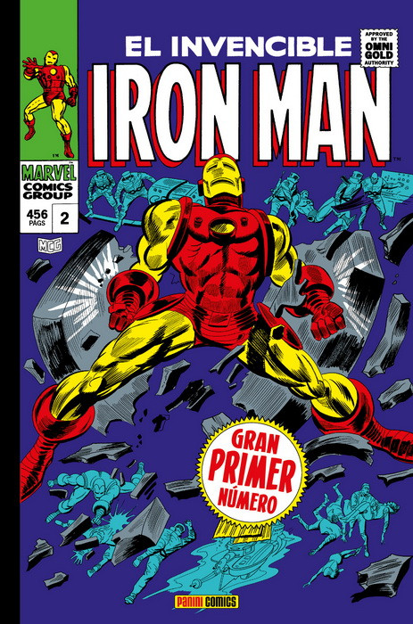

UNIVERSO MARVEL
El universo Marvel es el universo de ficción compartido en el que ocurren la mayoría de las historias de los cómics publicados por Marvel Comics. El término suele utilizarse para referirse a la continuidad principal de Marvel; pero a veces se usa también para hablar del Multiverso Marvel, compuesto por todas las distintas continuidades que aparecen dentro de las publicaciones de Marvel Comics.

Comic MARVEL THE AMAZING SPIDER-MAN: the sinister six!
El Universo Marvel está fuertemente basado en el mundo real. La Tierra en el Universo Marvel tiene todas las características de la real: mismos países, mismas personalidades (políticos, estrellas de cine, etc.), mismos acontecimientos históricos (como la Segunda Guerra Mundial), y así sucesivamente. Sin embargo, también contiene muchos elementos de ficción: países como Wakanda y Latveria (naciones muy pequeñas), y organizaciones como la agencia de espionaje S.H.I.E.L.D. y su enemigo, HYDRA, y A.I.M. En 2009, Marvel oficialmente describió la geografía del mundo en una miniserie de dos partes, el Atlas de Marvel.
Lo más importante, el Universo Marvel también incorpora ejemplos de casi todos los principales conceptos de ciencia ficción y fantasía, con los escritores añadiendo más continuamente. Extraterrestres, dioses, magia, poderes cósmicos y tecnología extremadamente avanzada desarrollada por humanos, todos existiendo en el Universo Marvel. (Un universo que incorpora todos estos tipos de elementos fantásticos es bastante raro; otro ejemplo es el Universo DC.) Los monstruos también juegan un papel más prominente con orígenes asiáticos orientales de encantamiento mágico, brujería extravagante y el principio de manifestación en el Universo Marvel. Uno de estos casos es Fin Fang Foom surgiendo de las cenizas de la magia tántrica. Gracias a estos elementos adicionales, la Tierra en el Universo Marvel es el hogar de un gran número de superhéroes y supervillanos, quienes han obtenido sus poderes por cualquiera de estos medios.
Comparativamente poco tiempo pasa en el Universo Marvel en comparación con el mundo real, debido a la naturaleza serial de la narración, con las historias de ciertas ediciones empezando unos pocos segundos después de la conclusión de la anterior, mientras que en tiempo real ha pasado un mes. Los héroes principales de Marvel fueron creados en la década de 1960, pero la cantidad de tiempo que ha pasado entre entonces y ahora dentro del universo mismo (después de un período prolongado de ser identificado como de unos diez años en la década de 1990) ha sido más recientemente identificada como de trece años. En consecuencia, el escenario de algunos acontecimientos que eran contemporáneos cuando fueron escritos tienen que actualizarse cada pocos años con el fin de "tener sentido" en esta línea de tiempo flotante. Por lo tanto, se considera que los acontecimientos de historias anteriores han ocurrido dentro de un cierto número de años antes de la fecha de publicación de la edición actual. Por ejemplo, la graduación de preparatoria de Spider-Man fue publicada en Amazing Spider-Man #28 (septiembre de 1965), su graduación de la universidad en Amazing Spider-Man #185 (octubre de 1978), y su reunión de preparatoria en Marvel Knights: Spider-Man #7 (diciembre de 2004). Debido a la línea de tiempo flotante, donde las historias hacen referencia a acontecimientos históricos de la vida real, estas referencias son más tarde ignoradas o reescritas para adaptarse a las sensibilidades actuales. Por ejemplo, el origen de Iron Man fue cambiado en una historia de 2004 para hacer referencia al conflicto armado en Afganistán, mientras que las historias originales de Iron Man habían hecho referencia a la Guerra de Vietnam.
Comic MARVEL EL INVECIBLE IRON MAN
La propia compañía de Marvel Comics existe dentro del Universo Marvel, y versiones de personas como Stan Lee y Jack Kirby han aparecido en algunas de las historias, mientras que personajes como Steve Rogers (álter ego del Capitán América), han trabajado para Marvel. La compañía Marvel Comics de esta realidad publica cómics que adaptan las aventuras reales de los superhéroes (con la excepción de detalles no conocidos por el público, como sus identidades secretas); muchos de estos son licenciados con el permiso de los propios héroes, quienes habitualmente donan su parte de las ganancias a la caridad. Adicionalmente, se dice que el Universo de DC Comics existe en el Universo Marvel como uno de los muchos universos alternativos. Lo inverso también puede decirse con respecto al Universo DC. Este es un método de explicar las diversas historias crossover co-publicadas por ambas compañías.